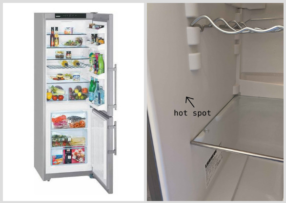
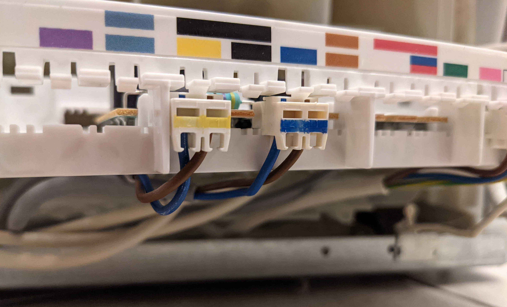
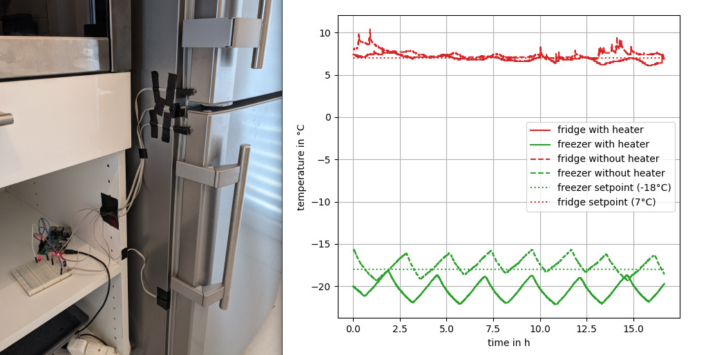
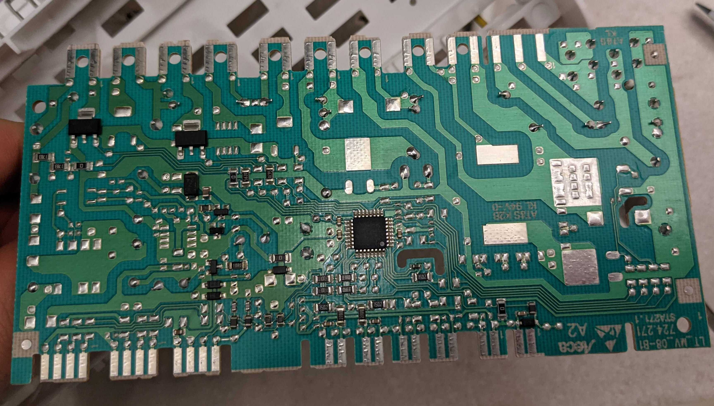
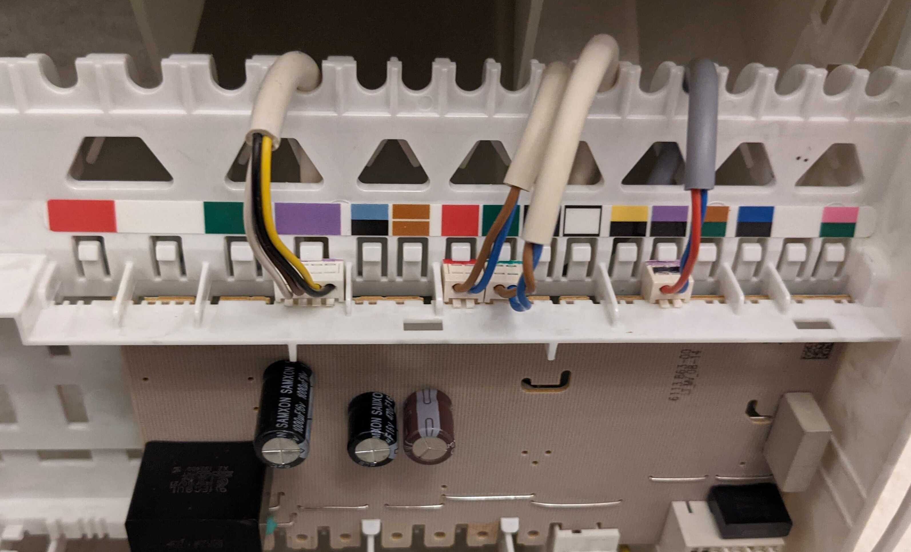

Recently, I noticed that the apple I just took out of the fridge was warm on one side. On inspecting the fridge, I noticed a palm-sized hot area on the left inner wall. The fridge is so well-insulated, why is there a hot area inside?

My appliance is a fridge-freezer combination. To be more specific, it's the Liebherr CUPesf 3505 from 2017. In the fridge compartment, the temperature should be around 7°C, and in the freezer compartment, it should be around -18°C. However, the appliance has only one compressor and cooling circuit. The engineers at Liebherr had to find a way to generate two significantly different temperatures from a single cooling circuit. To achieve this, the refrigerant is initially directed through the freezer compartment where it absorbs a certain amount of energy. When it arrives in the fridge compartment it is then noticeably warmer. If this circuit is tuned correctly, both compartments achieve the correct temperature.
There is a problem, however. The ambient temperature influences the balance between the fridge- and freezer compartment. To understand why, imagine an extreme case where your fridge is placed outside during winter at exactly 7°C ambient. In this case, the compressor would never have to run to maintain 7°C in the fridge compartment. However, if the compressor never runs, the freezer compartment would also be at 7°C.
The solution that the engineers at Liebherr came up with is rediculous. They install a heater in the fridge compartment. Yes you heard that right. A heater in the fridge. That's the hot spot I noticed on the left inner wall of my fridge. With my device, the compressor starts running when the fridge temperature is above 7°C. Activating the heater in the fridge leads to colder freezer temperatures while the fridge is still at around 7°C. Liebherr adresses the heater in their combo appliences in the second paragraph of this blog entry, which is published under the category "innovation and technology".
So they use their customers' electricity to heat the fridge compartment. I meassured 10 watts permanently for the heating element and you have to add approximately 5W extra to dissipate the 10W from the fridge. (using a COP of 2, the total power (heater + fridge) is 15W) First I suspected the heater is modulated to only use the power necessary to balance the compartments. But it actually looks like it consumes 10W below 22°C ambient and is turned off above 22°C ambient. So 15W in total, resulting in 130kWh or 39€ of extra cost per year, assuming 0.3€/kWh and assuming the ambient temperature is below 22°C all year.
The tests where this fridge received its A++ rating were presumably conducted at temperatures above 22°C. I found this 2010 EU Regulation for energy labelling of refrigerating appliances. They describe in detail how the EEI (Energy Efficiency Index) has to be calculated, however I couldn't find a statement for the ambient temperature requirement while meassuring the energy consumption. They only state in Annex VIII paragraph 2 that the ambient temperature under standard test conditions is 25°C.
I also found the new version that was released 2019 and replaces the one from 2010. I think they made a lot of good improvements over the 2010 version of the regulation but am still not completely pleased since they don't explicitly forbid the use of a heater. They even included:
"To improve the effectiveness of this Regulation, products that automatically alter their performance in test conditions to improve the declared parameters should be prohibited."
It seems like they learned from the Volkswagen "Dieselgate". They also changed their testing procedure and now test the appliences that are sold with climate class N at an ambient temperature of 16 °C and 32 °C and than take the average.
So, what to do when the government is not up to the task of preventing companies from selling inefficient products? In this case, the solution is simple. Just unplug the heating element. (be careful and unplug the mains first) The picture below shows the power side of the control board. The plug with the blue marking is the heating element and the plug with the yellow marking is for the lighting:

By the way, only the larger devices have dedicated heaters. The smaller devices often heat with their light bulb. In order to make them more efficient you can replace the incandescent light bulb with an LED.
To see what consequences the unplugged heater has, I conducted some measurements. I measured the temperature in the fridge- and freezer compartment as well as the ambient temperature. To detect when the doors are opened, I attached two hall sensors. The result is, as expected, a decrease in the freezer compartment temperature when the heater is active. The fridge temperature is unaffected by the heater since it is actively controlled to 7°C. The spikes in the fridge temperatures occurred when the door was opened. The ambient temperature was around 21°C for both meassurements. I decided that I can live with the increased freezer temperature since it still regularly reaches -18°C. This will save me 39€ in elektricity a year and the device will last much longer since it's not running as often. You can see the shorter compressor running times in the freezer temperatures when comparing the time between high- an low point with and without heater.

Finally let's have a look at the circuite board. They used a Atmel ATmega 168 microcontroller. Only half of the board is populated. I guess my fridge is missing a lot of cool features. (maybe more heaters...) The cheap manufacturing is noticeable. The connectors are directly plugged onto the board and it has the weight and integrity of cardboard:

And here is the sensor side of the circuit board:

The cable with the red and blue wires is the pwm signal that goes to the compressor motor controller. The display unit is connected to the purple-coded plug. They probably implemented some digital bus to receive the fridge- and ambient temperature and transmit the display data. The cables with the brown and blue color correspond to the reed contacts of the two doors.
As it's possible that my appliance is defective and doesn't work as designed, I would love to hear about your experience with fridge/freezer combos via email at "patrick-dot-suhm2-at-gmail-dot-com".